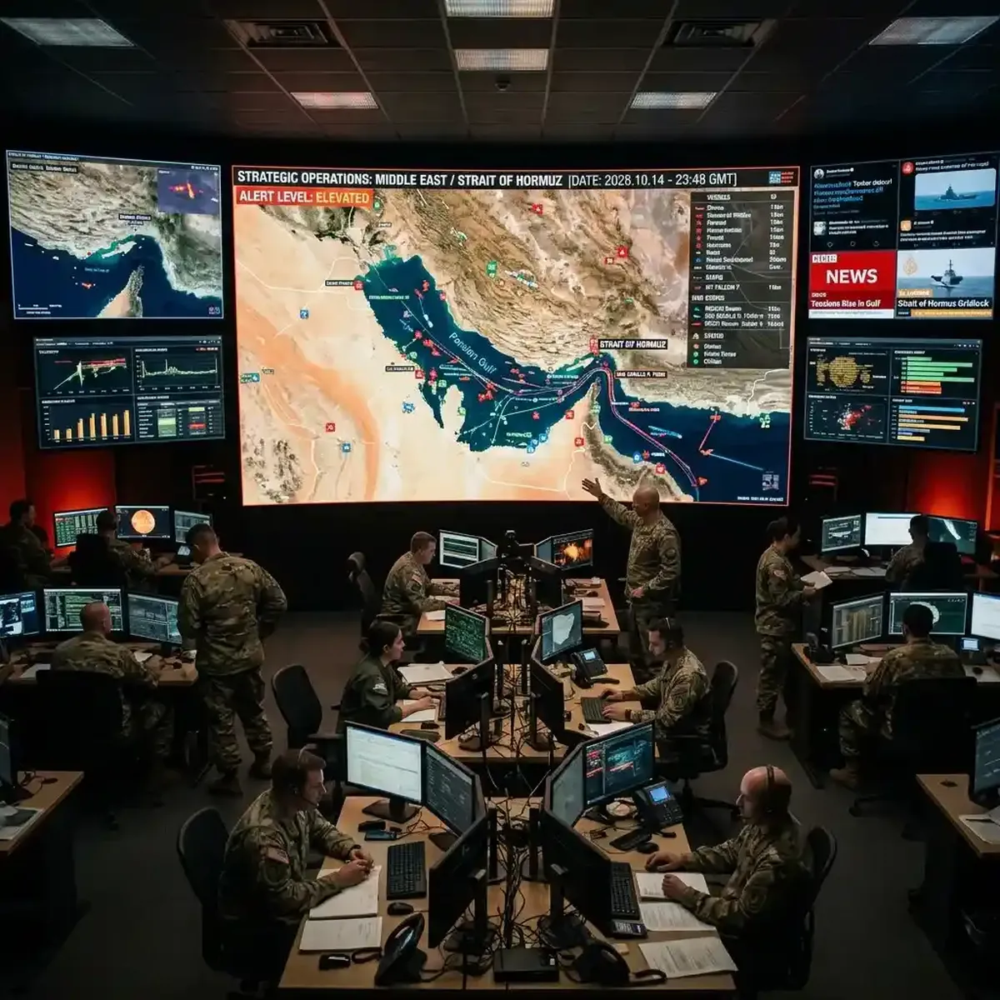

Monitoring Global Geopolitical News: Real-Time Multi-Stream Curation

The global diplomatic landscape is highly dynamic, demanding a new level of real-time multi-stream monitoring.
As international summits, policy briefings, and press conferences occur simultaneously across different time zones, staying informed requires more than just checking static headlines once a day. The speed of modern global affairs means that policy shifts, economic agreements, and diplomatic resolutions are reported live in fragments. To truly build a comprehensive situational report, a multi-stream approach using video dashboarding is an essential tool for analysts, journalists, and researchers alike.
The Diplomatic Stage: Analyzing Global Summit Sessions
The primary theater of international relations often centers on major global summits (such as the UN Security Council sessions, G20 meetings, and EU policy debates). These high-level meetings are live-streamed, providing a direct view of official positions. To grasp the full context of these negotiations, it is highly beneficial to watch the live speeches alongside expert real-time translation and commentary.
Using YoutubeMulti, analysts can dedicate a primary grid cell to the UN Web TV live feed while simultaneously monitoring secondary analysis streams from international news agencies (such as Reuters, BBC, or Deutsche Welle). This side-by-side comparison allows viewers to spot translation variations and compare how different regional networks interpret the same policy declarations. Visual multitasking is key to maintaining objective situational awareness.
Strategic Reporting: Live Tracking of Press Conferences
During major global announcements, multiple government departments or international bodies often hold consecutive or concurrent press conferences. A journalist trying to follow an economic policy announcement, for instance, might need to track the Federal Reserve briefing, the European Central Bank response, and reactions from currency market analysts all at the same time.
YoutubeMulti allows you to build a dedicated "Global Briefings Grid." You can load the official live feed from one press room in one tile, independent financial news channels in another, and live market reactions in a third. This allows you to verify claims against raw market data as they are announced, removing the latency of waiting for summary articles later in the day.
Information Verification: Cross-Referencing Diverse Sources
One of the biggest challenges in global news monitoring is identifying bias and verifying reports. A single news source may present an event through a specific cultural or political lens. By using a multi-screen setup, researchers can view global media coverage of the same event simultaneously. Watching how different broadcasters frame the same press briefing helps identify editorial trends and compile a balanced perspective.
Conclusion: Building Your Custom Digital Newsroom
In a world of constant global updates, relying on a single tab or a standard television broadcast limits your scope. By transitioning to a structured, multi-stream viewing setup, you gain the analytical depth required to follow complex international news. Reclaim your workspace, organize your screens, and build a customized newsroom that handles the modern flow of information.